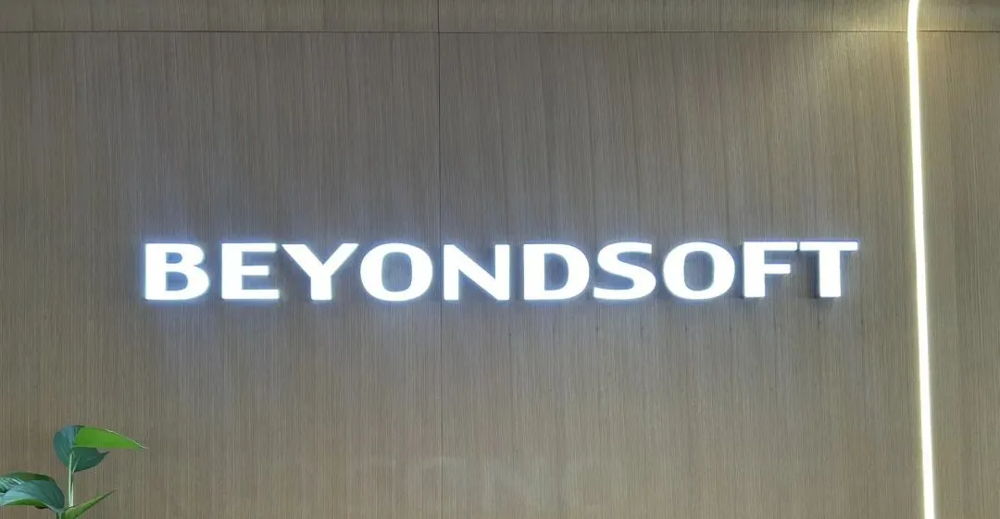
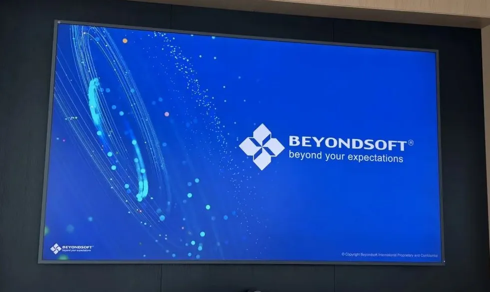
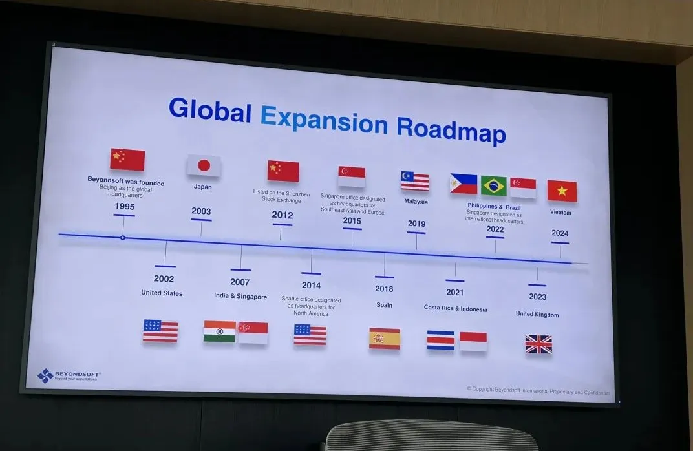
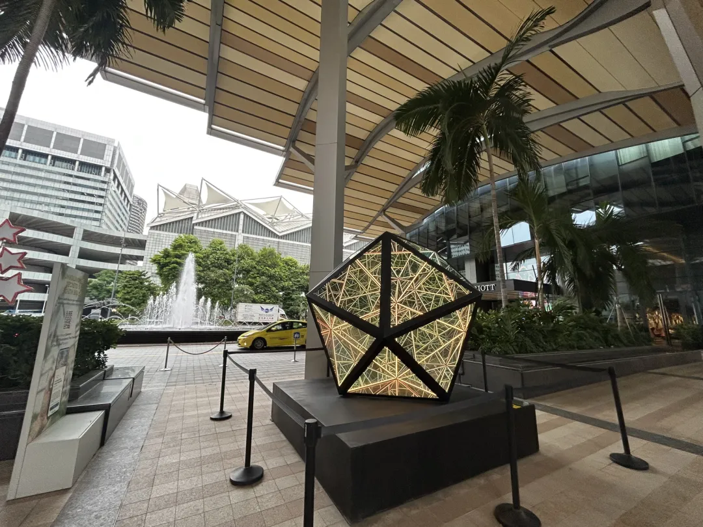
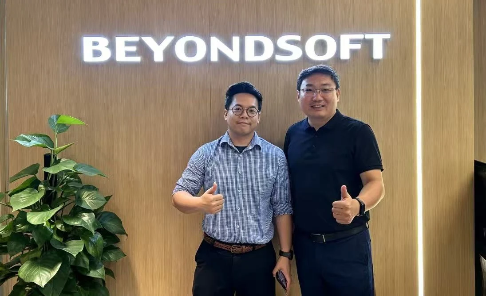
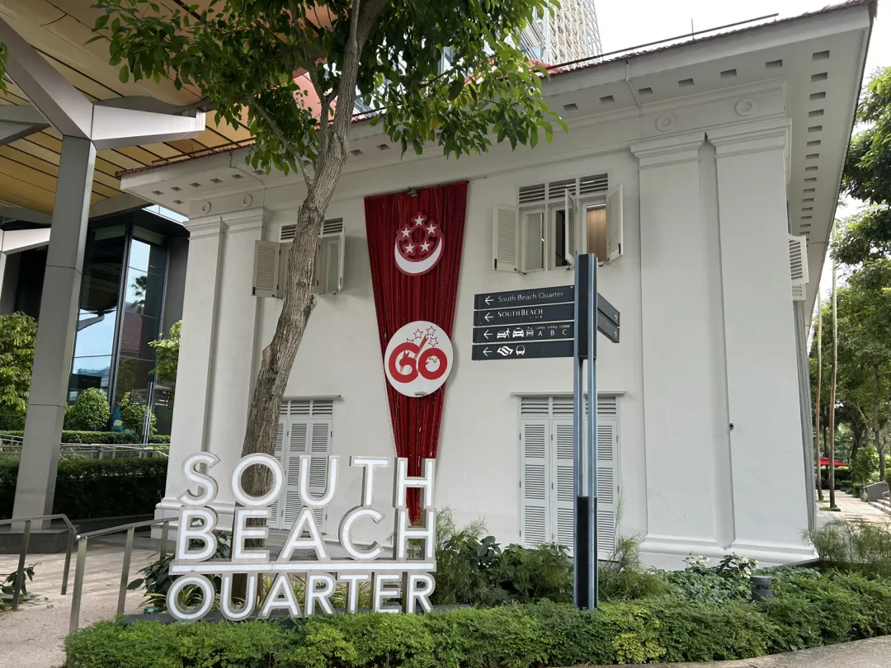
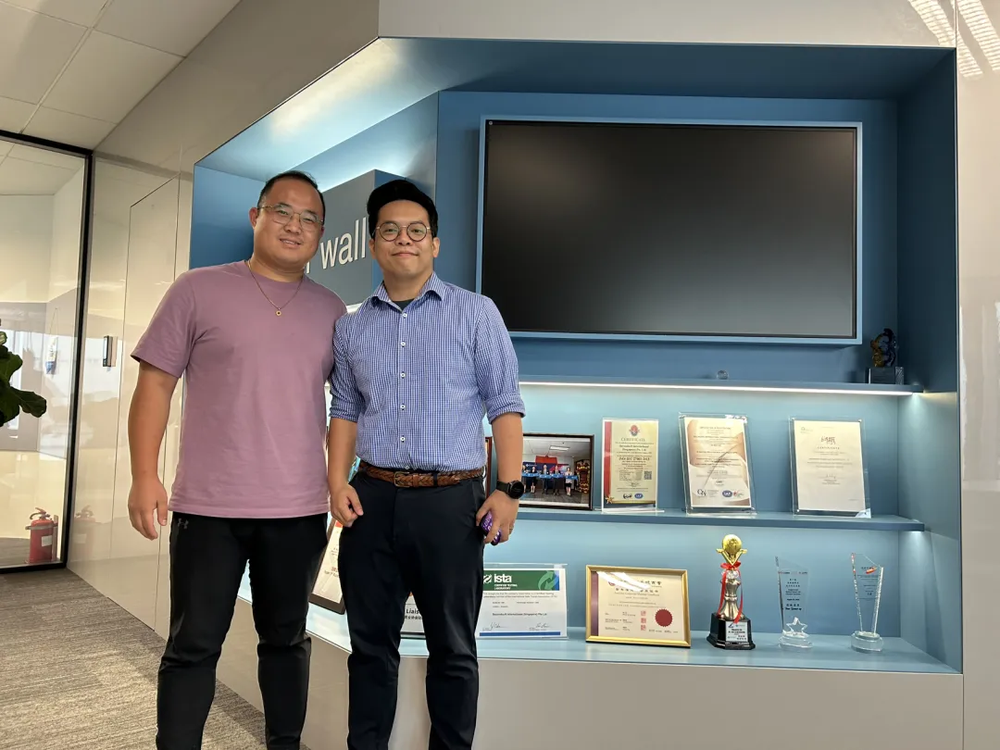

博彦科技新加坡考察｜中国IT服务企业全球化实践启发
Beyondsoft Singapore — where China's IT capability meets local conditions.
中国能力全球化 中国能力的全球化，不仅是能力外溢，也是能力的深化与优化。
和君丨海鑫汇 董立鑫 · 杭州科技六小龙·群核科技 张乐
于新加坡
2025 年 08月20日，我在新加坡调研，参观了博彦科技新加坡分公司（Beyondsoft International (Singapore) Pte Ltd），并与公司新加坡籍主管进行了深入交流。
几年前，我提出"中国能力的全球化是未来20年中国经济的重大战略机遇"。主观上，我们有这个能力；客观上，不出去，就会少很多用武之地。
以IT服务为例，中美贸易摩擦后的关税和政策变化大致是：从中国直接出口服务到美国，面临更高的成本压力；而在新加坡等东南亚国家设立分支机构，能享受更低的关税和本地化优势，接近区域市场。

这导致近年来中国IT企业对某些市场的直接出口减少，但并不等于中企能力的萎缩，只不过部分产能和服务迁到新加坡等地，转变为本地化运营。
以博彦科技为例，2015年公司在新加坡投资设立全资子公司，专注于IT咨询、解决方案和服务交付；2020年初，又将物联网业务扩展到新加坡，作为出海第一站。
从IT服务产业看，的确是"不出海，就出局"。因为你不出去，客户就会把订单交给在海外有布局的厂商。但出了海，是不是一定能成功？

此次新加坡之行让我感到，中国能力的全球化并不是能力的平移，而是原有能力与本土化条件结合后，形成一种更具融合性的新能力。换言之，中企出海不仅是能力外溢，也是能力的深化与优化。本文就从这个角度和大家做一些分享。
— 1 — 博彦科技：知识的互动
博彦科技成立于1995年，总部位于北京，是全球领先的IT咨询、行业解决方案与数智技术服务提供商，在高科技、金融、能源、制造、新零售等领域提供定制化服务。
公司在新加坡设立子公司后，战略性地扩展了足迹，将交付中心布局在美国、日本、新加坡和印度等地。新加坡分公司作为重要节点，参与"一带一路"数字化项目，并于2020年初启动物联网业务。
博彦科技新加坡业务负责人介绍说，从进入新加坡起，公司就高度重视对本地人才的培养，将本地员工融入全球团队，并通过培训计划提升他们的技能。
公司强调个性化参与模式，简化客户体验，这要求结合本地人才的基础和特点去塑造他们。例如，在员工培训中，公司制定了系统的计划，帮助本地员工掌握IT技能，同时鼓励中方干部学习本地文化和语言。语言的重要性在调研中也体现得很明显。简单日常沟通可以用工具，但涉及复杂的技术咨询或项目调整时，各团队成员需要完全理解要求。如果对知识和know-how驱动的行为理解得不准确，服务交付中就可能出现问题。所以，公司希望多招聘懂中文或双语人才，同时倡导本地员工学中文，中方员工学英语或本地语言，并不断提高本地员工的比例。
做IT服务，在不同文化和语言背景下提供高质量服务，对人的要求很高。大量在人机互动、人际互动中形成的隐性知识和技能，如何沉淀为企业可留存、可分享的资产，非常关键。
新加坡分公司还积极参与本地社会活动，如志愿者团队加入"Keep Singapore Clean"倡议，清理公共公园，这不仅提升了公司治理水平，也增强了与本地社区的融合。

公司与微软等伙伴合作，共同开发AI和机器学习项目，例如基于Microsoft Azure智能云的智能跑步机解决方案。这些实践沉淀出本地化的服务经验、项目经验和个人能力，与企业原有的知识体系形成互动。
对客户来说，它不关心你在北京还是新加坡交付，它要的是同样的质量。对博彦科技来说，必须结合本地人才的特点去优化流程，这样在软硬件上才能形成竞争力。在软体方面，学管理知识会快一点，技术技能的提升则需要更长时间的沉淀。这是博彦科技新加坡分公司对我的最大启发。
— 2 — 博彦科技：人货场的革新
在新加坡分公司，我还感受到本地操盘中，主人翁意识和创新精神的重要性。公司在扩展过程中，注重团队调整和优化，提升专业力和组织力。在外部，加强与消费者、渠道和总部的沟通。公司产品策略从单一服务转向全品类出击，包括高科技领域的消费者科技、企业科技和软件开发，以及银行金融服务的核心银行现代化、风险管理系统升级等。
新加坡作为区域枢纽，竞争激烈，包括本地和国际IT企业。公司善于把握数字化机会，而一些传统企业调整起来比较困难。通过交流，我的收获是意识到，即使在同一个区域，不同国家的差异性也很强。

但在新加坡，博彦科技通过本地化营销和项目管理，取得了突破。例如，公司参与本地环保和治理活动，提升品牌影响力；同时，大力开拓线上市场，利用数字化工具战略性投入。团队在推动大项目时，从"延长线思维"转向"进攻型策略"，在总部指导下取得增长。这时再提出新项目，团队就会更加坚定，也会得到总部更多支持。
中企出海，前方操盘团队对推什么服务、重点和突破点在哪里的认知，以及总部在供应链方面的节奏把握，是同样重要的两件事。
公司强调企业文化氛围，勇敢向前，团结向上，积极沟通，这股精气神帮助他们持续扩展。

— 3 — 结语
2007年，新加坡加强数字化转型，三星等韩资企业早早在本地布局IT和电子生产线。随后，全球供应链重构，更多科技公司涌入。
近年来，中美贸易摩擦后，有更多中国企业到新加坡投资。中企正在带动新加坡IT服务的第三波。
这一次的中企出海，具有明显的产业特征，和以往贸易型、套利型模式有很大不同。既要靠能力打天下，还要与本地化进行很好的结合，这必然是一个长期主义的知识与技能进化过程。

从我的调研看，以"生产性创新+不断提升本地化管理运营水平"为主旋律的中国企业精细化出海时代已经到来。
我相信也祝福它们，一定能演好"中国能力的全球化"与"在全球化中深化中国能力"的二重奏。

本文内容整理自海鑫汇海外考察记录，首发于海鑫汇官方公众号（2025年10月）。 查看公众号原文 →